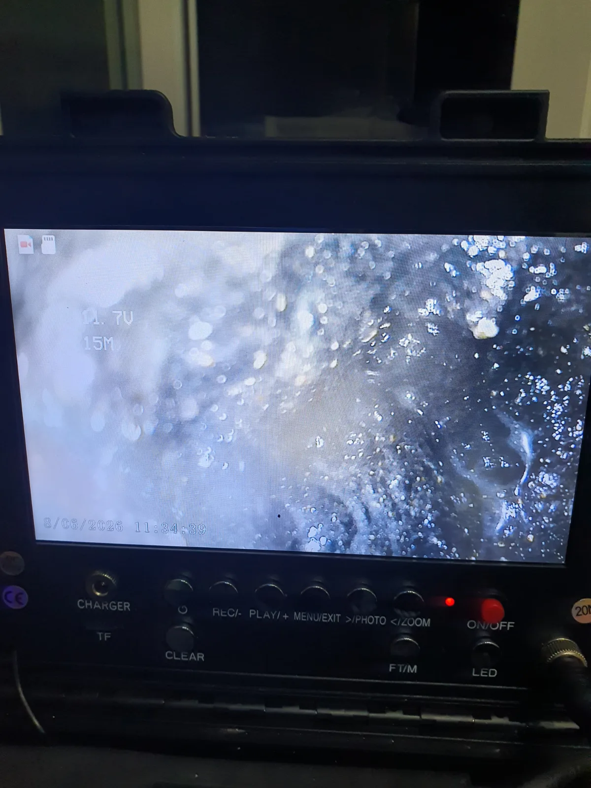

수지구 풍덕천동 싱크대막힘, 현장 도착 후 진단
용인시 수지구 풍덕천동의 오래된 아파트에서 싱크대막힘으로 방문했습니다. 막힌 곳은 싱크대 하부로 이어지는 배관이었으며, 오래된 주철배관이 사용되고 있었습니다.
배관 내시경으로 안쪽을 살펴보니 관벽에 붙은 축적물이 통로를 좁히고 있었습니다. 주철이 부식되면서 생긴 물질에 기름때까지 엉겨 붙어 검은 슬러지가 쌓인 상태였습니다. 싱크대 아래에서 오랫동안 쌓여온 흔적이었죠.
이번 현장은 막힌 통로를 확보하는 것과 함께 배관 자체의 상태도 살펴야 했습니다. 내부에 쌓인 이물질을 제거하는 작업과 부식된 배관을 보수하는 작업은 다르기 때문에, 상태를 확인하며 접근했습니다.
1단계: 증상 확인과 필요한 장비 작업
싱크대 하부 배관 입구로 샤프트를 넣어 배관스케일링을 진행했습니다. 회전하는 체인 헤드로 관 안쪽에 붙은 슬러지를 제거하면서 배수 통로를 확보했습니다. 장비에 묻어 나오는 이물질도 시커멓습니다. 부식 생성물과 기름때가 섞여 있던 모습이 작업 과정에서도 드러났습니다.
다만 오래된 주철배관인 만큼 무작정 강하게 작업할 수는 없었습니다. 부식으로 관벽이 약해진 구간이 있다면 세척 과정에서 기존 손상이나 누수 부위가 드러날 수 있기 때문입니다. 배관 상태를 고려하며 작업을 진행했고, 샤프트로 막힘을 해소해 물이 흐르는 상태까지 확보했습니다.
물이 내려가니 일단 한숨 돌렸습니다. 하지만 여기서 장비를 접을 수는 없었습니다. 물길은 열렸어도 오래된 배관이 어떤 상태인지는 한 번 더 봐야 했으니까요.

2단계: 원인 구간 처리와 정상 작동 확인
통수 후 배관 내시경을 다시 투입했습니다. 슬러지를 제거한 뒤 드러난 관벽을 살피며 부식이 심한 부분은 없는지, 파손이나 누수가 의심되는 부위는 없는지 정밀하게 점검했습니다. 배관 보수나 교체공사가 필요한 상태인지도 함께 살폈습니다.
오래된 주철배관이라고 무조건 교체해야 하는 것은 아닙니다. 반대로 물이 내려간다는 이유만으로 배관 상태까지 괜찮다고 단정할 수도 없습니다. 불필요한 교체공사를 권하지 않으면서도, 보수가 필요한 손상을 놓치지 않기 위한 확인 과정입니다.

작업 결과와 재발 방지 안내
이번 풍덕천동 현장은 샤프트 작업으로 싱크대 하부 배관의 막힘을 해결했습니다. 통수 후에도 내시경으로 내부를 다시 확인하며 노후 주철배관의 상태까지 점검했습니다.
평소에는 설거지 전 그릇과 팬에 남은 기름을 닦아내고, 음식물 찌꺼기는 거름망에서 따로 모아 버리는 것이 좋습니다. 싱크대 물이 느리게 내려간다면 우선 눈에 보이는 거름망의 찌꺼기를 제거해보세요. 그래도 배수가 느리거나 막힘이 반복된다면 하부 배관 안쪽에 축적물이 쌓였거나 다른 문제가 있는지 점검할 필요가 있습니다.
오래된 아파트에서 배관 교체를 안내받았다면 어떤 부위가 손상됐는지, 세척으로 해결할 수 있는 문제인지, 공사가 필요하다면 범위와 비용은 어떻게 되는지 설명을 요청해보세요. 내시경 화면이나 현장사진을 함께 보며 안내받으면 필요한 작업을 판단하는 데 도움이 됩니다.
신라건축설비는 용인 수지구를 비롯한 서울과 경기 지역의 싱크대막힘에 대응합니다. 막힌 원인과 배관 상태를 살펴 필요한 작업 범위와 비용을 안내하고, 보수가 필요한 경우에는 공사까지 연계해 대응합니다.
최종 조치: 샤프트를 이용한 배관스케일링으로 슬러지를 제거해 통수했습니다. 이후 내시경으로 내부 부식 상태, 파손과 누수 의심 부위, 보수공사 필요 여부를 점검했습니다.
현장 방문 전 확인하는 비용과 작업 범위
신라건축설비는 현장 증상과 배관 구조를 확인한 뒤 필요한 작업과 예상 비용을 안내합니다. 단순 관통으로 해결되는지, 배관내시경·석션·고압세척 또는 추가 장비가 필요한지는 현장 상태에 따라 달라집니다. 출장비와 야간 작업비, 추가 장비 비용이 발생할 수 있는 경우 작업 전에 먼저 설명하고 동의를 받은 범위에서 진행합니다.
업체를 선택할 때 확인할 사항
무조건적인 ‘0원’ 표현보다 실제 작업 범위, 추가 비용 조건, 사용 장비와 사후 대응 기준을 확인하는 것이 중요합니다. 해결되지 않았을 때의 비용 기준과 작업 후 동일 증상 발생 시 점검 범위를 사전에 문의해두면 불필요한 분쟁을 줄일 수 있습니다.
수지구 싱크대막힘 자주 묻는 질문
싱크대막힘은 왜 반복되나요?
수지구 풍덕천동 현장처럼 싱크대 하부로 이어지는 배관이 막혀 물이 원활하게 내려가지 않았습니다. 증상은 원인이 현장마다 다를 수 있습니다. 주방 배수관 내부에 기름때·슬러지·음식물 찌꺼기가 누적되거나 배관 구배와 긴 횡주관 때문에 반복될 수 있습니다. 단순 관통 후 다시 막힌다면 배수관 내부 상태를 확인하는 것이 좋습니다.
싱크대 물이 안 내려가거나 역류하면 싱크대뚫는업체를 불러야 하나요?
물이 천천히 빠지거나 싱크대역류가 반복되면 배수구 입구보다 안쪽 주방 배관에 막힘이 있을 수 있습니다. 현장에서는 배수 상태와 막힌 구간을 확인한 뒤 작업 방법을 정합니다.
싱크대 기름때 막힘은 약품으로 해결되나요?
가벼운 오염은 일시적으로 나아질 수 있지만 굳은 기름 슬러지와 배관 내부 스케일은 약품만으로 충분히 제거되지 않는 경우가 있습니다. 반복 막힘은 장비를 이용한 배관 청소가 필요할 수 있습니다.
싱크대뚫는업체는 어떤 장비로 작업하나요?
막힘 위치와 배관 상태에 따라 석션, 샤프트, 배관내시경, 배관 스케일링 장비 등을 사용합니다. 필요한 장비는 현장 진단 후 결정합니다.
싱크대막힘 비용은 어떻게 정해지나요?
막힘 구간의 길이와 오염 정도, 석션·샤프트·내시경 등 장비 투입 범위에 따라 달라질 수 있습니다. 작업 전 예상 범위와 추가 비용 조건을 먼저 안내합니다.
싱크대 악취도 배수관 막힘과 관련 있나요?
기름 슬러지와 음식물 오염이 배수관 내부에 쌓이면 배수 불량과 함께 악취가 나타날 수 있습니다. 다만 트랩이나 연결부 문제도 있어 현장 상태를 함께 확인해야 합니다.
싱크대막힘 서울·경기 출동지역
신라건축설비는 수지구 풍덕천동 현장을 포함해 서울 25개 구와 경기도 31개 시·군의 배관 문제를 상담합니다. 현장 거리와 기사 배정 상황에 따라 출동 가능 여부를 먼저 안내드립니다.
서울 전 지역
강남구 · 강동구 · 강북구 · 강서구 · 관악구 · 광진구 · 구로구 · 금천구 · 노원구 · 도봉구 · 동대문구 · 동작구 · 마포구 · 서대문구 · 서초구 · 성동구 · 성북구 · 송파구 · 양천구 · 영등포구 · 용산구 · 은평구 · 종로구 · 중구 · 중랑구
경기도 주요 출동지역
수원시 · 용인시 · 고양시 · 화성시 · 성남시 · 부천시 · 남양주시 · 안산시 · 평택시 · 안양시 · 시흥시 · 파주시 · 김포시 · 의정부시 · 광주시 · 하남시 · 광명시 · 군포시 · 양주시 · 오산시 · 이천시 · 안성시 · 구리시 · 의왕시 · 포천시 · 양평군 · 여주시 · 동두천시 · 과천시 · 가평군 · 연천군